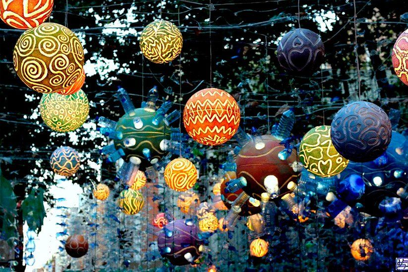

|
THE CULTURE OF BARCELONA
|
|
THE FAMOUS FESTIVALS OF BARCELONA
 An image
of one of the most Famous Festivals of Barcelona - La Merce
An image
of one of the most Famous Festivals of Barcelona - La Merce
Festivals are the joy of celebration and play a major
role in any country's culture and tradition. Barcelona celebrates several
festivals like, Dia
de Sant Jordi, Festa Major de Garcia, La Merce, Cruilla, Christmas, Primavera
Sound Festival, L'Alternativa - Barcelona Film Festival.
The Famous Festivals

Festa Major de Garcia
This Barcelonian festival begins on 15th of
August every year, that is a magnificant celebration held annnually in the
Picturesque village of Barcelona. The name Festa Major de Garcia that means,
a major festival of Garcia written in spanish. On this day all the
associations that decorate the streets and squares come together and take
part in organising the dance, concerts, workshops, communal meals and so on.

Cruilla
Cruilla festival also known as the Summer
festival is most joyously celebrated in Barcelona without any specific date
when the festival is celebrated. In this year of 2023 the festive event was
held on 5, 6, 7 and 8th of July in Parc del Forum, a public park located
between the district of Sant Marti, Barcelona. This festive event is based
on music, art, and comedy that will provide an unforgettable experience to
all the audience that visit this festival, which will remain as one of their
great memories.

La Merce
La Merce is an annual
festival of the city of Barcelona, Catalana Spain that was being celebrated
since 1871. This festival is considered as the festival of festivals in
Barcelona. It is celebrated in the honour of one of the patron saints of
Barcelona, Lady of the Mercy, and is called as "La Mare de deu de la Merce"
in spanish. The main feast day of this festival is on every 24th of
September but the festivities for this occasion begins few days beforehand.
The honours are shown to "Our Lady of Mercy" as Mary, the mother of Mankind
who protects and cares for all. Mother Mary giving birth to Jesus, the son
of God who embodied God's mercy for all.

Dia de Sant Jordi
Dia de Sant Jordi, that means the
day of Sant jordi in spanish is the most important festivals of Barcelona. This festival of
Barcelona is celebrated on the 23rd of April every year and this festival can
also be called the highlight of April in Barcelona. The day of Dia de Sant Jordi
celebrates the Patron Saint of Barcelona, Eulalia, who was a 13 year old Roman
Christian virgin known for being oppressed in the city of Barcelona during the
time when the Christians where persecuted in the reign of emperor diocletian. On
this day, the whole of Las Ramblas, a well known street in Central Barcelona is
made into a flower street. The reason behind transforming this street into a
flower stall is that men should show their appreciation for women through these
flowers as a act of going against Eulalia's case in the past.
Next Page
Pevious Page